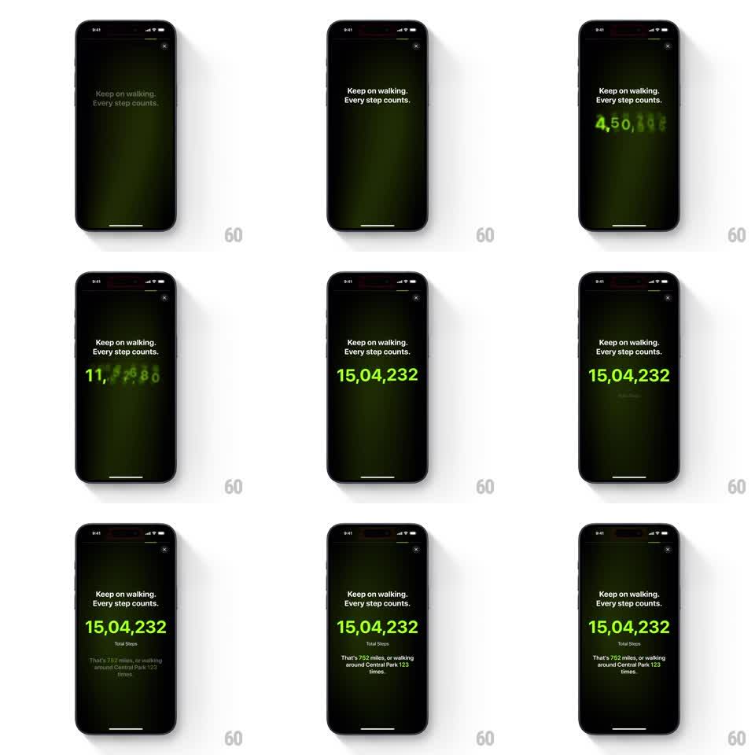

Media
Frame-by-frame

Rebuild this animation 1:1: a fitness wrapped recap card - a huge neon-green step count rolls up in a blurred ticker animation, sharpens on the final number, then supporting text fades in below.

Rebuild this animation 1:1: a fitness wrapped recap card - a huge neon-green step count rolls up in a blurred ticker animation, sharpens on the final number, then supporting text fades in below.
## Integration
Integration: stack-agnostic spec - springs given as stiffness/damping, timed motions as duration + curve; map every value to your framework and animation library of choice.
## Scene
A dark story-style card with a faint green radial glow and a close X at top right. Header text reads "Keep on walking. Every step counts." Below it, a giant neon-green number ticks upward in a blur ("4,50,108" to "11,12,80" in motion) and lands sharp on "15,04,232". Then a "Total Steps" label and supporting line fade in: "That's 752 miles, or walking around Central Park 123 times."
## Motion spec
Pattern: blurred count-up ticker, ~3s total.
- The header fades in first (300ms).
- The counter starts at 0 and rolls up over 1.8s (ease-out): digits change rapidly with a vertical motion blur that scales with the count speed - heavy blur mid-roll, sharpening as it decelerates.
- The number lands with a subtle settle (scale 1.04 to 1, 150ms) and full sharpness on the final formatted value (Indian digit grouping: 15,04,232).
- "Total Steps" fades in 200ms after landing, the supporting line 250ms later (both 300ms fades with an 8px rise).
## Calibration
- The blur is directional (vertical) and tied to digit velocity - a ticker, not a glow.
- The final number holds perfectly still; the life is in the roll.
## Reduced motion
Number fades in at its final value.
## Don't miss
- The count uses Indian locale grouping (lakh-style commas), not Western thousands.
- The header never moves; only the number and the lines below it animate.